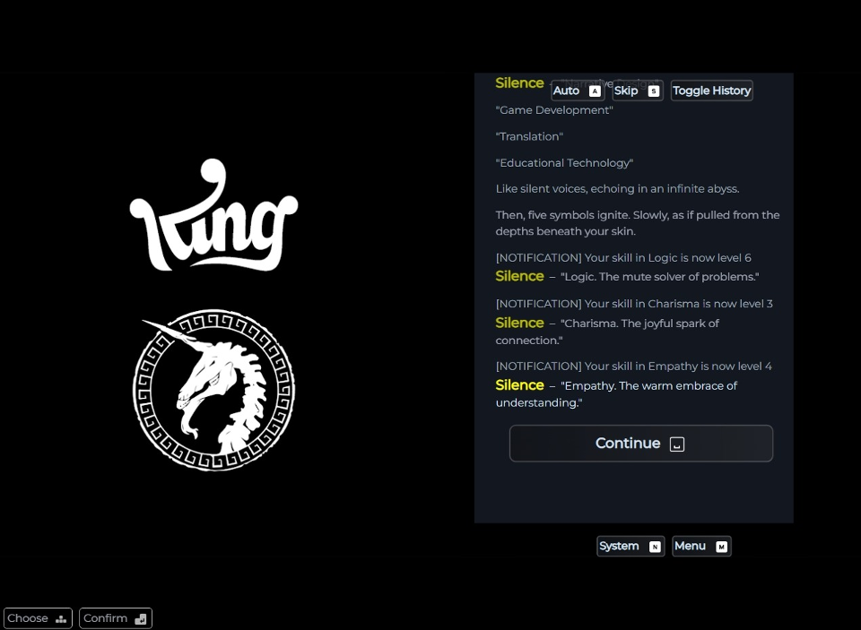
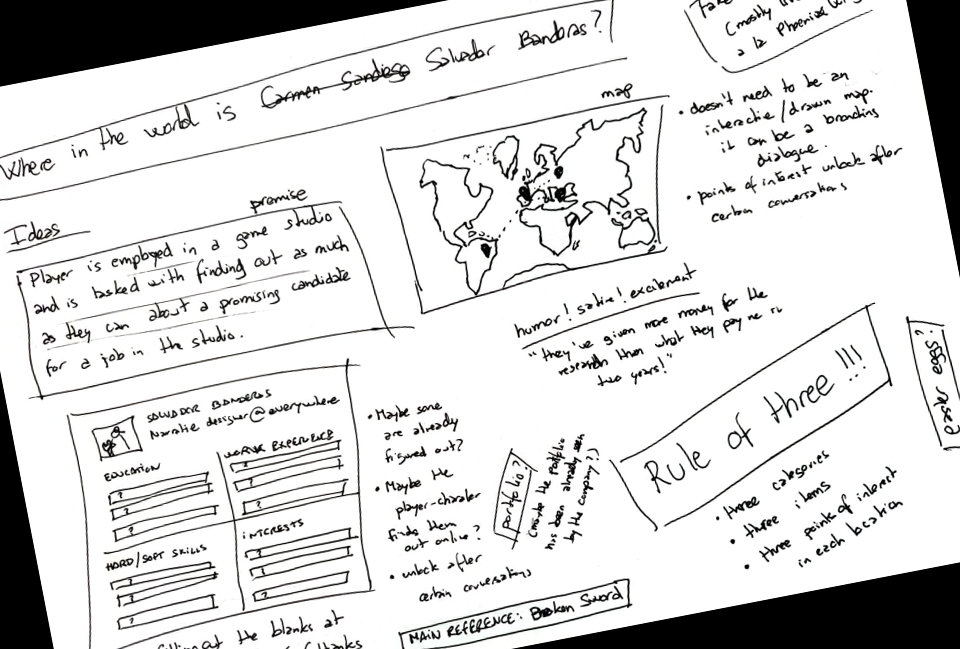

Salvador Banderas’
The Quest for Narrative Design
A collection of small narrative-driven projects created by Salvador Banderas Rovira as part of the THU & King Mentorship Program. Each one explores different ways to tell stories through play. Sometimes weird, sometimes fun, always personal. Special thanks to my mentor Marc Pestka for his support and guidance along the way.
Final Fantasy-style Interactive CV WIP
A CV you can walk through. Like a mini RPG map of my experience.
The Interview: A Playable Recruiter Experience WIP
You're the recruiter. Roll the dice, ask questions, see where it leads.
Where in the World is Salvador Banderas? WIP
Travel the world through a branching story. Who am I? Find out!
Other Projects
A collection of side projects and design experiments created during the mentorship, exploring different formats, themes, and mechanics.
A Silent Song
Design document
A rhythm-based platformer where two children with aphasia navigate the world through music and motion, building connection without words.
Narrative Design Research
Research
An early-stage collection of narrative design tools, articles, videos, and resources gathered to explore the field’s foundations.
Player, Key, Door, Switch
Design Document
A set of narrative game proposals exploring themes like obedience, sacrifice, and agency through puzzle-based mechanics.
Infinite Houses
Prototype
A looping mini-game with multiple modes, built around timed interactions with switches, keys, and absurd repetition.
Party Animal WIP
Prototype
A reimagining of a classic Mario Party-style minigame, redesigned with new mechanics, narrative context, and custom-coded behavior.